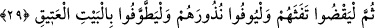

İNSANLAR ARASINDA
HACCI İLÂN ET
26. Bir zamanlar İbrahim’e Beytullah’ın yerini hazırlamış ve (ona şöyle demiştik):
Bana hiçbir şeyi eş tutma; tavaf edenler, ayakta ibadet edenler, rükû ve secdeye
varanlar için evimi temiz tut.
27, 28. İnsanlar arasında haccı ilân et ki, gerek yaya olarak, gerekse nice uzak
yoldan gelen yorgun argın develer üzerinde, kendilerine ait bir takım yararları
yakînen görmeleri, Allah’ın kendilerine rızık olarak verdiği kurbanlık hayvanlar
üzerine belli günlerde Allah’ın ismini anmaları (kurban kesmeleri için) sana
(Kâbe’ye) gelsinler. Artık ondan hem kendiniz yeyin, hem de yoksula, fakire
yedirin.
29. Sonra kirlerini gidersinler; adaklarını yerine getirsinler ve o Eski Ev’i
(Kâbe’yi) tavaf etsinler.
30. Durum böyle. Her kim, Allah’ın emir ve yasaklarına saygı gösterirse, bu,
Rabbinin katında kendisi için daha hayırlıdır. (Haram olduğu) size okunanların
dışında kalan hayvanlar size helâl kılındı. O halde, pislikten, putlardan sakının;
yalan sözden sakının.
31. Kendisine ortak koşmaksızın Allah’ın hanifleri (O’nun birliğini tanıyan
müminler olun). Kim Allah’a ortak koşarsa sanki o, gökten düşüp parçalanmış da